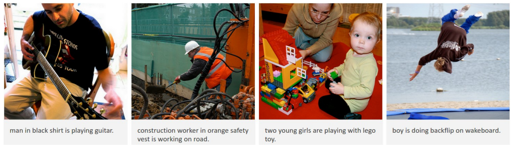
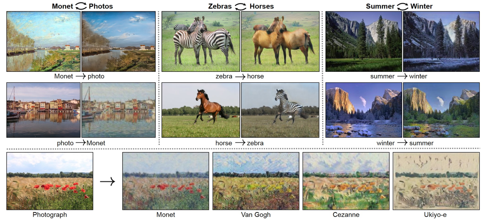

Deep Learning & Computer Vision
第 2 讲
授课教师：王兴刚 · 华中科技大学 电信学院
深度学习发展史
xwcv.github.io
第 2 讲 · 导览 02
Overview
本讲关注：神经网络如何从低谷走到大模型
从 1986 年的反向传播，到 2012 年的 AlexNet 时刻，再到 2022 年的 ChatGPT——理解深度学习如何一步步改变世界。
概念奠基：人工智能 → 机器学习 → 深度学习
历史脉络：神经网络的三起两落 1986 BP 2006 DBN 2012 AlexNet
核心模型：卷积神经网络与深度革命 ResNet
视觉应用：检测、分割、生成全面重塑
大模型时代：注意力、扩散生成、对齐与能力边界 ChatGPT
第 2 讲 · 导览 03
Learning Outcomes
学完这讲，你应该能解释模型如何学习
把一次训练迭代讲清楚：模型做出预测，损失衡量误差，反向传播计算梯度，优化器更新参数
说明卷积为什么适合图像，以及局部连接和权重共享带来了什么
比较 CNN 与 Transformer 的归纳偏置、数据需求和计算特点
解释自注意力、扩散生成、指令微调与偏好对齐各自解决什么问题
面对模型输出，知道哪些结果需要检索、工具或人工复核
判断是否真正理解的方法很简单：不说“端到端”“涌现”这类术语，也能把输入、计算、输出和限制 讲明白。
Just as electricity transformed industry after industryAI is the new electricity.
—— Andrew Ng（吴恩达），2017
第 2 讲 · 概念奠基 05
人工智能 ⊃ 机器学习 ⊃ 深度学习
人工智能（1956 —）
让机器拥有智能：搜索、规划、专家系统、学习……
机器学习（1980s —）
从数据中学习规律，而非手写规则
深度学习（2012 爆发）
用深层神经网络自动学习表示
CNN · RNN · Transformer
每一层都是上一层的子集：深度学习是当前人工智能浪潮的核心引擎。
第 2 讲 · 概念奠基 06
核心挑战：语义鸿沟
计算机看到的图像：一个巨大的数字矩阵
人类看到的图像：猫、狗、场景、故事
像素与语义之间的鸿沟，是视觉的根本难题
视角、光照、遮挡、形变 → 同类图像像素差异巨大
跨越鸿沟的关键：学习好的特征表示
跨越语义鸿沟的关键，是让机器自动学习好的特征表示 ，而不是靠人手工设计。
第 2 讲 · 概念奠基 07
传统机器学习 vs. 深度学习
传统机器学习：人工特征工程
输入 → 手工特征 → 分类器 → 输出
图像特征：SIFT、HOG、Gabor
语音特征：MFCC、Filter Bank
分类器：SVM、Boosting、决策树
性能瓶颈在特征，特征设计靠专家经验
深度学习：表示学习
输入 → 端到端学习 → 输出
特征与分类器联合优化，自动从数据中学出
层次化表示：边缘 → 部件 → 物体
性能随数据与算力规模持续增长
代表模型：CNN、RNN/LSTM、Transformer
深度学习的本质：特征不再人工设计，而是与分类器一起从数据中端到端学出来 。
第 2 讲 · 概念奠基 08
深度学习三巨头
2018 年 ACM 图灵奖 授予 Bengio、Hinton、LeCun表彰他们在深度神经网络概念与工程上的奠基性贡献
Hinton 再获 2024 年诺贝尔物理学奖 （与 John Hopfield 共享）
LeCun：卷积神经网络之父（LeNet）
Bengio：表示学习与神经语言模型先驱
第 2 讲 · 概念奠基 09
Chapter Summary
本章小结：概念奠基
01
AI ⊃ ML ⊃ DL
人工智能是让机器拥有智能的总目标；机器学习用数据 代替手写规则；深度学习用深层神经网络自动学习表示 。
02
语义鸿沟
计算机看到像素矩阵，人类看到语义；视角、光照、遮挡让同类图像像素差异巨大。跨越鸿沟靠学习好的特征表示 。
03
特征工程 → 表示学习
传统方法：手工特征（SIFT/HOG）+ 分类器，瓶颈在特征；深度学习：端到端联合优化 ，性能随数据与算力持续增长。
04
奠基者
Bengio、Hinton、LeCun 获 2018 年图灵奖 ；Hinton 再获 2024 年诺贝尔物理学奖 。
02
历史脉络
同一种基本思想为什么会经历低谷和复兴？
第 2 讲 · 历史脉络 11
八十年演进：从电子脑 到 ChatGPT
1943 McCulloch & Pitts 神经元模型 → 1958 感知机 → 1986 反向传播 → 2006 深度置信网络 → 2012 AlexNet → 2017 Transformer → 2022 ChatGPT。
第 2 讲 · 历史脉络 12
人工神经元：加权求和 + 非线性
灵感来自生物神经元：树突输入、轴突输出
输出 = 激活函数（加权和）：g(x ) = f(Σ wi xi + b)
权重 w 是可学习的参数
单个神经元是线性分类器；多层堆叠获得强大表达能力
神经元 = 加权求和 + 非线性激活 ；权重 w 就是网络要从数据中学习的参数，b 是偏置。
第 2 讲 · 历史脉络 13
激活函数：非线性的来源
没有非线性激活，多层网络等价于单层线性变换；ReLU 及其变体（Leaky ReLU、PReLU、ELU）是现代网络的默认选择。
第 2 讲 · 历史脉络 14
训练 = 最小化损失函数
L = (1/m) Σi ( ŷi − yi )² 均方误差（MSE）：衡量预测与真值的差距
# 梯度下降：沿损失函数的负梯度方向迭代更新参数
while True :
grad = evaluate_gradient(loss_fn, data, weights)
weights -= step_size * grad # w ← w − η · ∂L/∂w
# 反向传播（Backpropagation）= 用链式法则高效算出每一层的 ∂L/∂w
# 前向算预测 → 计算损失 → 反向传梯度 → 更新权重
训练神经网络 = 梯度下降 负责更新参数 + 反向传播 负责高效算梯度，二者缺一不可。
第 2 讲 · 历史脉络 16
One Training Step
一次训练迭代中，哪些量发生了变化？
计算 这一阶段在回答什么 发生变化的量
前向计算 当前参数会给出什么预测？ 激活值和预测结果；参数暂时不变 计算损失 预测与目标相差多少？ 得到一个用于优化的标量 反向传播 每个参数对误差负有多大责任？ 得到各参数的梯度；参数仍未更新 优化器更新 参数应向哪个方向移动多少？ 权重发生小幅变化
常见误解：反向传播本身不更新参数，它只负责计算梯度；真正改动权重的是 SGD、Adam 等优化器 。
第 2 讲 · 历史脉络 15
1986 · Nature
第一次浪潮：反向传播 让多层网络可训练
Rumelhart、Hinton & Williams 在《Nature》推广反向传播算法，多层感知机（MLP）由此兴起。
链式法则逐层回传误差，高效计算所有参数的梯度
多层网络可解决单层感知机无法解决的 XOR 问题 等非线性问题
理论上：含一个隐藏层的网络即可逼近任意连续函数（万能逼近定理）
神经网络一度被视为通用的学习机器，与生物神经系统遥相呼应
反向传播的思想可追溯至更早，Rumelhart、Hinton & Williams 1986 年《Nature》论文的功绩是让它真正普及 开来。
第 2 讲 · 历史脉络 16
1995 — 2006
低谷十年：神经网络为何被放弃？
难训练 ：Sigmoid 饱和导致深层网络梯度消失算力不足 ：CPU 时代无法支撑大规模训练数据太少 ：小训练集上深网络严重过拟合实际效果不佳，学术界转向更稳妥的方法
同期主流：SVM（1995） Boosting 决策树 KNN —— 扁平结构 + 手工特征（GMM-HMM、SIFT、LBP、HOG），一个任务一套方法。
第 2 讲 · 历史脉络 17
2006 · Science
第二次浪潮的起点：深度置信网络
2006 年 Hinton 在《Science》提出深度置信网络（DBN），用无监督逐层预训练破解深网络训练难题。
算法 ：逐层预训练，以及更好的归一化、非线性、Dropout 设计算力 ：GPU 与多核系统让矩阵运算成百上千倍提速数据 ：互联网时代带来大规模数据库 —— Big Data！算法 × 算力 × 数据三要素共振，深度学习时代开启
深度学习的复兴 = 算法 × 算力 × 数据 三要素共振——这个框架贯穿全讲，也解释了大模型时代。
第 2 讲 · 历史脉络 18
2011：深度网络率先刷新语音识别纪录
任务 训练数据（小时） DNN-HMM 错误率 GMM-HMM（同数据）
Switchboard（测试集 1） 309 18.5 27.4 Switchboard（测试集 2） 309 16.1 23.6 English Broadcast News 50 17.5 18.8 Bing Voice Search（句错误率） 24 30.4 36.2 YouTube 1,400 47.6 52.3
Dahl、Yu、Deng、Acero 等（微软研究院，2011–2012）：在同等数据下，DNN-HMM 全面大幅优于统治语音界数十年的 GMM-HMM。
第 2 讲 · 历史脉络 19
ImageNet：为深度学习备好「燃料」
李飞飞团队 2009 年发布的大规模视觉数据库
超过 1400 万张 人工标注图像、2 万多个类别
ILSVRC 挑战赛：1000 类、约 128 万张训练图像
在数据稀缺的年代，ImageNet 是训练深网络的前提
图源：Deng et al., ImageNet, CVPR 2009 / image-net.org
第 2 讲 · 历史脉络 20
2012：AlexNet 时刻
名次 队伍 Top-5 错误率 方法
1 U. Toronto（AlexNet） 15.3% 深度卷积网络（2 块 GPU） 2 U. Tokyo 26.2% 手工特征 + 学习模型 3 U. Oxford 27.0% 手工特征 + 学习模型 4 Xerox / INRIA 27.1% 手工特征 + 学习模型
Krizhevsky, Sutskever & Hinton（NeurIPS 2012）：错误率一举甩开亚军 10.8 个百分点，整个领域为之震动——此后 ILSVRC 冠军全部被深度学习包揽。
第 2 讲 · 历史脉络 21
连锁反应：从学术界到工业界
2013 ：Google 与百度相继上线基于深度学习的视觉搜索引擎Google：「测试集上平均精度翻倍……把学术实验室的前沿成果直接上线，只用了六个多月」
2014 ：DeepID 系列在 LFW 人脸验证取得 99.15% 准确率（DeepID2），首次超越人类表现 （汤晓鸥团队，NeurIPS 2014）计算机视觉的全线任务开始被深度网络改写
第 2 讲 · 历史脉络 22
Chapter Summary
本章小结：神经网络的三起两落
01
第一次浪潮：反向传播
1986 年 Rumelhart、Hinton & Williams 推广 反向传播 ，多层网络可训练；理论上有万能逼近能力。
02
低谷的教训
深层网络梯度消失 、算力不足、数据太少 → 效果不佳；同期 SVM + 手工特征成为主流。
03
第二次浪潮：2006 重启
Hinton 的深度置信网络用逐层预训练 破解训练难题；算法 × 算力 × 数据开始共振，语音识别率先突破。
04
2012：AlexNet 时刻
ImageNet 备好数据燃料，AlexNet 以 15.3% Top-5 错误率夺冠、甩开亚军 10.8 个百分点，深度革命正式爆发。
03
卷积神经网络
卷积为什么适合图像？网络加深后为什么更难训练？
第 2 讲 · 卷积神经网络 24
CNN 的思想源流
1980 · Neocognitron （Fukushima）：受视觉皮层启发的层次化模型
简单细胞提特征、复杂细胞做池化——CNN 的思想雏形
1998 · LeNet-5 （LeCun 等）：基于梯度的学习成功用于银行支票数字识别
2012 · AlexNet ：同样的思想 + 大数据 + GPU = 历史性爆发启示：好思想需要等待数据与算力的时代
CNN 的思想 1980 年就有雏形；AlexNet 的爆发 = 老思想 + 大数据 + GPU 的时代共振。
第 2 讲 · 卷积神经网络 25
卷积层：卷积核在图像上滑动
每个输出值 = 卷积核与对应局部区域的点积；多个卷积核产生多通道特征图（如 32×32×3 图像 + 6 个 5×5×3 卷积核 → 28×28×6）。
第 2 讲 · 卷积神经网络 26
卷积为什么适合图像？
局部连接 ：每个神经元只看一小块感受野
权重共享 ：同一个卷积核在所有位置复用
平移等变性：猫出现在左上角还是右下角都能检测
参数量大幅缩减：5×5×3 核只有 75 个参数，与图像大小无关
对比全连接：1000×1000 图像单层全连接需 10¹² 量级参数，卷积只需数百
池化（Pooling）：降采样、扩大感受野、增强平移鲁棒性
记住：局部连接 + 权重共享 是卷积层参数高效的根本原因。
第 2 讲 · 卷积神经网络 27
AlexNet 架构（2012）
5 个卷积层 + 3 个全连接层，约 6000 万参数；输入 224×224×3，输出 1000 类；在 2 块 GPU 上训练约一周；学到的表示可直接迁移到检测、分割、检索等任务。
图源：Krizhevsky et al., NeurIPS 2012
第 2 讲 · 卷积神经网络 28
AlexNet 为什么能成功？
Hinton 团队并无丰富的大规模图像分类经验，但他们把当时所有关键要素用到了极致。
ReLU 激活 ：缓解梯度消失，训练速度数倍于 tanhGPU 训练 ：2 块 GTX 580 并行，一周训完 6000 万参数Dropout ：随机丢弃神经元，强力抑制过拟合数据增广 ：裁剪、翻转、颜色扰动，扩充有效数据量ImageNet 大数据 ：百万级标注图像是这一切的基础
AlexNet 的启示：突破是算法 + 算力 + 数据 + 工程细节 （ReLU/Dropout/增广）的系统胜利。
第 2 讲 · 卷积神经网络 29
网络自己学到了什么？
AlexNet 第一层 96 个 11×11 卷积核：一半学到频率/方向选择性的边缘检测器（灰度），另一半学到颜色检测器——与生物视觉皮层的简单细胞惊人相似。手工特征时代要精心设计的东西，网络自己学出来了。
图源：Krizhevsky et al., NeurIPS 2012
第 2 讲 · 卷积神经网络 30
AlexNet 的 Top-5 预测
8 张测试图的 Top-5 预测（柱高 ∝ 概率）
正确标签基本都在 Top-5 之内
错误也「情有可原」：grille（格栅）vs. convertible（敞篷车）
即使物体不在画面中心（螨、豹），依然能识别
第 2 讲 · 卷积神经网络 31
深度革命（Revolution of Depth）
16.4%
AlexNet
8 层 · 2012
7.3%
VGG
19 层 · 2014
6.7%
GoogLeNet
22 层 · 2014
3.6%
ResNet
152 层 · 2015
ILSVRC 冠军的层数（柱高）与 Top-5 错误率（标注）：深度是性能提升的主轴。同期关键技术：PReLU、批归一化（Batch Normalization）、深监督（DSN）等相继出现。
第 2 讲 · 卷积神经网络 32
但「简单堆层」遇到了退化问题
朴素堆叠的深层网络（plain net）训练误差反而更高
56 层比 20 层差——不是过拟合，是优化本身失败
梯度在深层传播中衰减/失真，网络难以学好
问题：如何让 100+ 层的网络可训练？
退化 ≠ 过拟合：过拟合是训练误差低、测试误差高；退化是训练误差本身就高 ——问题出在优化。
第 2 讲 · 卷积神经网络 33
ResNet 的答案：残差连接
不让层直接学 H(x)，改学残差 F(x) = H(x) − x
输出 y = F(x) + x ：恒等捷径（skip connection）
梯度可沿捷径无损回传，深网络不再难优化
学不到东西时 F(x)→0，退化为恒等映射——不会更差
152 层 ResNet 获 ILSVRC 2015 冠军（3.6%），残差思想成为现代网络标配
残差连接 y = F(x) + x 让梯度沿恒等捷径无损回传——这是训练百层以上网络的通用钥匙，如今已成为标配。
第 2 讲 · 卷积神经网络 35
Chapter Summary
本章小结：卷积神经网络与深度革命
01
两大思想
局部连接 （只看感受野）+ 权重共享 （全图复用同一卷积核）→ 参数高效、平移等变。
02
AlexNet 工程配方
ReLU + GPU + Dropout + 数据增广 + ImageNet ，五个要素把 6000 万参数的网络真正训了出来。
03
深度革命
VGG 19 层 → GoogLeNet 22 层 → ResNet 152 层 ；ILSVRC 错误率从 16.4% 一路降到 3.6% 。
04
残差连接
朴素堆层会遇到退化 （优化失败而非过拟合）；y = F(x) + x 让梯度无损回传，配合 BN、初始化、Dropout 构成训练工具箱。
04
深度学习重塑视觉任务
同一套视觉特征如何服务分类、检测和分割？
第 2 讲 · 视觉应用 37
目标检测：R-CNN（2014）
提取约 2000 个候选区域 → 逐区域过 CNN 提特征 → SVM 分类
PASCAL VOC mAP：33.4%（DPM）→ 53.7% （R-CNN）
「区域 + CNN 特征」范式开启检测深度学习时代
后续演进：Fast/Faster R-CNN → 单阶段 YOLO 系列
第 2 讲 · 视觉应用 38
Research Case · HUST-VL
案例：分类置信度高，不代表掩码画得准
原来的评分哪里不对？
实例分割既要判断“是什么”，又要给出精确掩码
常见做法直接用分类置信度给掩码排序
但分类正确的实例，掩码 IoU 仍可能很低；分数与输出质量不匹配
Mask Scoring R-CNN 怎样改？
增加 MaskIoU head，输入实例特征与预测掩码
直接估计预测掩码和真实掩码之间的 IoU
用估计质量校准最终掩码分数，使排序更接近实际分割质量
评价一个复杂输出时，置信度应对应我们真正关心的质量。请想一想：检测框、深度图和生成图像分别需要怎样的“质量分数”？
Huang et al., Mask Scoring R-CNN, CVPR 2019 · github.com/zjhuang22/maskscoring_rcnn
第 2 讲 · 视觉应用 38
语义分割：全卷积网络 FCN（2015）
把分类网络的全连接层改为卷积层（convolutionalization）
任意尺寸输入 → 端到端输出逐像素的类别热图
跳跃连接融合深层语义与浅层细节
PASCAL VOC 相对提升 20%，推理从约 50 秒降到 175 毫秒
第 2 讲 · 视觉应用 40
Research Case · HUST-VL
案例：全局上下文很重要，但每个像素都看全图太贵
为什么分割需要远处信息？
单个局部纹理常有歧义，像素类别要结合物体整体与场景判断
全局非局部注意力让每个位置读取所有位置，但显存和计算量随像素数快速增长
研究问题因此变成：能否少看一些位置，仍得到全局信息？
CCNet 的具体做法
一次 criss-cross attention 只读取当前位置所在的一行和一列
重复两次后，任意两个位置都能通过中间位置交换信息
论文报告：相较非局部模块，GPU 显存约降至 1/11，计算量减少约 85%
在 5×5 网格上任选两个不同行、不同列的位置：你能画出它们经过两次 criss-cross attention 交换信息的路径吗？
Huang et al., CCNet, ICCV 2019 / TPAMI 2023 · github.com/speedinghzl/CCNet
第 2 讲 · 视觉应用 39
深度学习改写每一个视觉子领域

(a) 图像描述：CNN + RNN，Show and Tell（CVPR 2015）
(b) 场景文字识别：CRNN（TPAMI 2017）

(c) 图像翻译：CycleGAN（ICCV 2017）
此外还有：边缘检测（HED）、轮廓检测（DeepContour）、超分辨率（SRCNN）、图像着色——几乎每个子领域都被端到端学习刷新。
第 2 讲 · 超越视觉 40
AlphaGo：深度网络 + 强化学习（2016）
DeepMind 的围棋程序，2016 年 4:1 击败李世石
策略网络 ：CNN 输入 19×19×48 棋盘特征，输出落子概率分布价值网络 ：评估局面胜率，减少搜索深度结合蒙特卡洛树搜索，登上《Nature》封面
第 2 讲 · 超越视觉 41
深度学习的影响力早已超出视觉
强化学习 · 游戏 ：DQN 玩 Atari 打砖块达到人类水平；自学玩转 Flappy Bird强化学习 · 导航 ：四旋翼无人机视觉自主穿越森林工业节能 ：DeepMind 用 AI 优化 Google 数据中心冷却系统，能耗降低 40%（2016）医疗影像 ：病理切片细胞分裂检测（ICPR 2012 MITOSIS 竞赛），深度网络以明显优势夺冠，超越全部人工特征方法（Cireşan et al., MICCAI 2013）
第 2 讲 · 视觉应用 42
Chapter Summary
本章小结：深度学习重塑视觉任务
01
目标检测：R-CNN 系列
R-CNN（CVPR 2014）用「候选区域 + CNN 特征」把 VOC mAP 从 33.4% 提到 53.7% ；后续 Faster R-CNN、YOLO 走向实时。
02
语义分割：FCN
分类网络全卷积化 ，任意尺寸输入、端到端输出逐像素热图（CVPR 2015），成为分割的标准范式。
03
子领域全面改写
图像描述（CNN+RNN）、场景文字识别（CRNN）、图像翻译（CycleGAN）、边缘检测、超分辨率——端到端学习 刷新每一个子领域。
04
超越视觉
AlphaGo（Nature 2016）= 深度网络 + 强化学习 + 蒙特卡洛树搜索；影响力延伸至语音、游戏、医疗、工业。
05
大模型时代
注意力、规模和后训练分别改变了模型的什么能力？
第 2 讲 · 大模型时代 44
From CNN to Attention
从卷积到注意力：为什么需要新架构？
局部连接与权重共享让 CNN 高效利用图像结构，但远距离位置之间通常不能在一层内直接交互。
感受野有限 ：卷积只看局部，远程依赖要靠层层堆叠间接传递图像越大、对象间关系越全局，「层层传递」就越吃力
语言建模的需求更极端：任意两个词之间都可能有直接联系
注意力 让每个位置「查询」所有位置，一步建立全局联系2017 年后 Transformer 逐步成为语言建模主流，2020 年起广泛进入视觉
CNN 内置局部性与平移等变先验；注意力可以直接建模全局关系。两者的效果取决于数据规模、计算预算和具体任务。
第 2 讲 · 大模型时代 45
自注意力如何让每个位置读取全局信息？
Attention(Q,K,V) = softmax(QKT / √dk )V
Q（Query） ：当前位置想找什么
K（Key） ：每个位置提供什么索引
V（Value） ：每个位置实际传递什么内容
QKT → 计算位置之间的相关性
softmax → 把相关性变成权重
加权求和 → 汇聚所有位置的信息
多头注意力 在不同子空间并行计算多组关系；由于注意力本身不含顺序，还必须加入位置编码或位置偏置。
依据：Vaswani et al., Attention Is All You Need, NeurIPS 2017
第 2 讲 · 大模型时代 47
Attention in Plain Language
“它追着球跑”中的“它”应该读取谁的信息？
先不用公式解释
“它”提出查询：句子里谁可能是我的指代对象？
“小狗”“球”“跑”等词提供各自的索引和内容
相关性最高的位置获得较大权重，信息被加权汇入“它”的新表示
换成图像时
每个图像 patch 都可以查询其他 patch
物体的一部分可以直接读取远处另一部分的信息
位置编码告诉模型各 patch 原来在图像中的位置
注意力权重显示模型在这一步如何汇聚信息，但不能自动等同于完整、可靠的因果解释。
第 2 讲 · 大模型时代 45
Vision Transformer：把图像当句子读（2020）
把图像切成 16×16 小块并拉平成向量——图像变成一串「视觉词元」
加上位置编码，直接套用标准 Transformer 编码器 ，几乎不改架构
大规模预训练（JFT-300M）下超越 CNN；小数据上则不如 CNN
Swin Transformer （ICCV 2021，Marr Prize）：窗口注意力 + 层级结构，兼容检测、分割等密集预测
第 2 讲 · 大模型时代 46
CNN vs. ViT：两种视觉范式
对比维度 CNN（ResNet） ViT / Swin
归纳偏置 强 ：局部性 + 平移等变内置弱 ：主要靠数据自己学全局建模 堆层间接扩大感受野 一层注意力直达任意位置 数据需求 小数据友好 渴求大规模预训练 特征结构 金字塔（多尺度） 等宽柱状（Swin 兼顾多尺度） 代表模型 VGG、ResNet ViT、Swin
ViT 表明：在足够规模的预训练下，较弱的视觉归纳偏置也能取得很强结果；在小数据或密集预测中，CNN 与层级式 Transformer 仍各有优势。
第 2 讲 · 大模型时代 47
端到端学习把全部环节放在一起优化
传统烹饪
去壳 → 腌制 → 裹粉 → 油炸
端到端训练会联合优化所有环节，并直接对齐最终目标 ；传统流水线则逐模块独立设计。
素材：Naiyan Wang「Traditional Cooking vs. End-to-End Cooking」演示
深度学习把许多任务写成同一个问题：y = f(x) 。
端到端学习把特征提取和任务目标放在一起优化
第 2 讲 · 大模型时代 49
“涌现”描述了什么？为什么仍有争议？
一些离散评分任务中，较小模型接近随机水平，较大模型的得分明显上升
Wei et al.（2022）把这种随规模出现的非连续表现称为涌现能力
后续研究指出，准确率等非连续指标可能放大“突然出现”的观感
换用连续指标或更细的模型尺度后，部分能力会呈现更平滑的变化
更稳妥的理解是：涌现描述了某些评测结果随规模的变化 ，并不等于已经证明模型内部发生了明确的相变。
依据：Wei et al., TMLR 2022；Schaeffer et al., NeurIPS 2023
第 2 讲 · 大模型时代 51
Research Case · HUST-VL
案例：检测器为什么只能找训练时规定的类别？
封闭词表检测器
普通 YOLO 的类别集合在训练时固定，例如 COCO 的 80 类
换成新的类别名称，分类头没有对应输出
重新收集边界框标注并训练，成本高、响应慢
YOLO-World 的改法
把类别文本作为输入，用图文预训练学习区域与词语的对应关系
推理时给出文本提示，检测提示中指定的对象类别
论文在 LVIS 报告 35.4 AP、V100 上 52 FPS，兼顾开放词汇能力与实时性
“开放词汇”不是模型自动发现所有未知物体；它仍需要文本提示。真正改变的是类别不再被固定分类头锁死。
Cheng et al., YOLO-World, CVPR 2024 · github.com/AILab-CVC/YOLO-World
第 2 讲 · 大模型时代 50
视觉基础模型：Segment Anything（2023）
Meta AI 的分割基础模型（SAM）：可提示分割
点、框、掩码、文本均可作为提示（prompt）
数据引擎自举：1100 万图像、11 亿掩码（SA-1B）
统一的 Transformer 框架，强大的零样本泛化
第 2 讲 · 大模型时代 51
Depth Anything：单目深度估计基础模型
任意场景零样本深度估计（上：输入图像；下：预测深度图）——「Anything」成为基础模型的命名范式。
图源：Yang et al., Depth Anything, CVPR 2024 / depth-anything.github.io
第 2 讲 · 大模型时代 52
2024 · Foundation Models
视觉基础模型的新进展
SAM 2：从图像走向视频（2024.7）
Meta 发布，统一图像与视频 的可提示分割
记忆注意力机制跨帧跟踪目标，支持实时视频分割
配套 SA-V 数据集：约 5.1 万段视频、64 万+ 掩码轨迹
交互分割速度数倍于 SAM，标注成本进一步下降
Depth Anything V2（NeurIPS 2024）
抛弃人工标注真实图像，改用合成图像 保证细节精度
教师-学生范式：大教师模型为海量真实图像生成伪标签 ，小模型蒸馏学习
细节更锐利，小模型比 V1 快 10 倍以上
「合成数据 + 伪标签」成为数据引擎新范式
基础模型的趋势：从单张图像 走向视频与开放世界 ，从人工标注走向自助数据引擎 。
第 2 讲 · 大模型时代 53
人工智能三要素与规模法则
数据 算法 算力 共同影响训练结果；增加其中一项并不保证所有任务都同步改善。
数据量之外，还要考虑质量、覆盖范围、重复样本、版权与隐私
Scaling Law：在一定条件下，预训练损失随参数、数据和计算量近似按幂律下降
规模扩大能带来较稳定的平均改进，但具体能力可能受数据构成、后训练和评测方式影响
ChatGPT 还依赖指令数据、人类偏好反馈和部署系统，不是单纯扩大模型
数据墙 ：高质量公开文本或在 2020 年代末耗尽（Villalobos et al., ICML 2024）——合成数据与推理时计算成为新的增长引擎。
第 2 讲 · 大模型时代 54
ChatGPT：规模放大后出现新的对话能力（2022）
GPT = Generative Pre-trained Transformer （生成式预训练变换模型）
本质上是一个由参数表示的深度神经网络大模型 + 对话式 AI 系统
发布 2 个月月活跃用户破 1 亿——史上增长最快的消费者应用
对比：TikTok 用了 9 个月，Instagram 用了 30 个月
把语言模型包装为自然的多轮对话界面，并通过人工反馈改善指令遵循
能够完成问答、改写、摘要、代码生成等多种文本任务，但输出仍由概率生成
参数中的知识来自训练数据；若没有检索或工具接入，模型不会自动获得最新事实
ChatGPT 的影响来自预训练、指令微调、偏好对齐与产品交互的共同作用
第 2 讲 · 大模型时代 55
从 GPT-1 到 ChatGPT：同一架构，持续放大
模型 年份 参数量 关键改进
GPT-1 2018 1.17 亿 12 层 Transformer；预训练 + 微调范式 GPT-2 2019 15 亿 48 层；零样本（zero-shot）能力初显 GPT-3 2020 1750 亿 96 层；上下文学习（in-context learning） ChatGPT 2022 — RLHF ：基于人类反馈的强化学习对齐人类意图
GPT 系列延续解码器式 Transformer；模型规模、训练数据和后训练方法都在变化。此后出现了 Claude、Gemini、Qwen、Llama、DeepSeek、Kimi 等不同技术路线。
第 2 讲 · 大模型时代 56
从语言模型到对话助手，需要哪些训练阶段？
阶段 训练信号 主要作用
预训练 海量文本中的下一个词元 学习语言规律、事实关联和通用模式 监督式指令微调 人工编写的“指令—回答”示范 让模型按任务要求作答，而不只是续写文本 偏好对齐 人类对多个回答的比较排序 训练偏好或奖励模型，并用 RLHF 等方法改善有用性与安全性 部署系统 系统提示、检索、工具与安全策略 补充外部知识和行动能力；这些能力不全来自模型参数
“会续写”与“会按要求回答”不是同一能力。模型规模增大本身并不能保证指令遵循，也不能消除事实错误。
依据：Ouyang et al., NeurIPS 2022；Lewis et al., NeurIPS 2020；Yao et al., ICLR 2023
第 2 讲 · 大模型时代 56
2024–2025 · Reasoning
推理模型：用「慢思考」换智能
预训练规模之外开辟新的增长维度——推理时计算（test-time compute） ：让模型花更长时间「想」，再回答。
OpenAI o1 （2024.9）：强化学习训练思维链，数学竞赛（AIME）与科学问答（GPQA）成绩大幅跃升DeepSeek-R1 （2025.1）：R1-Zero 证明纯强化学习 （不经监督微调）即可涌现自我验证、反思等推理行为；开源权重，2025 年 9 月登上《Nature》OpenAI o3 （2025.4）等后续模型：推理范式结合工具调用，直接面向智能体任务思维链越长往往越准——「回答问题时花多少算力」成为新的 scaling 轴
Scaling 的新维度：从训练时计算 扩展到推理时计算 ——模型性能的引擎从「预训练有多大」变成「还会想多久」。
第 2 讲 · 大模型时代 57
国产开源大模型的崛起（2024–2025）
模型 发布时间 亮点
DeepSeek-V3 2024.12 671B MoE（每词仅激活 37B）；MLA + 无辅助损失负载均衡；训练仅用 278.8 万 H800 GPU 小时 DeepSeek-R1 2025.01 开源推理模型，性能对标 o1；极致成本引发全球「DeepSeek 时刻」 Qwen3 2025.04 旗舰 235B-A22B MoE；思考 / 非思考混合模式；全尺寸开源 Kimi K2 2025.07 1T 参数 MoE 开源；面向智能体（agentic）任务专项优化
开源权重 + 极致工程效率：2025 年中外大模型差距迅速收窄，开源生态成为中国模型的主战场。
第 2 讲 · 大模型时代 58
Transformer：统一语言、视觉与多模态的架构（2017）
《Attention Is All You Need》：抛弃循环与卷积，只用注意力
自注意力：用 Q、K、V 计算序列内部任意位置间的依赖
多头注意力并行捕捉多种关系；天然适配并行计算
高度可扩展 → 成为语言、视觉、多模态大模型的统一基座
注意力让序列中任意两个位置直接交互 ，并行度高、可扩展性强——这是 Transformer 统一各模态的根本原因。
第 2 讲 · 大模型时代 60
扩散模型如何从噪声生成图像？
训练时
逐步向真实图像加入高斯噪声
随机选择一个噪声强度，让网络预测所加噪声或等价目标
通过大量样本学习不同噪声水平下的去噪方向
生成时
从随机噪声开始，多步反向去噪
文本编码通过条件机制影响每一步的生成内容
Latent Diffusion 在压缩后的潜空间去噪，再由解码器还原图像
扩散模型不是一次“画出”图像，而是学习一个逐步去噪的生成过程 ；潜空间计算降低了高分辨率生成的成本。
依据：Ho et al., NeurIPS 2020；Rombach et al., CVPR 2022
第 2 讲 · 大模型时代 59
AIGC 浪潮：Stable Diffusion 文生图
文本编码器理解提示词，UNet 在潜空间逐步去噪（约 50 步），解码器还原成图像。Rombach et al., CVPR 2022；Midjourney 一年内实现千万用户与亿美元营收，随后 Sora、可灵、即梦等视频生成模型相继爆发。
第 2 讲 · 大模型时代 60
2024–2025 · Generation
视频生成与多模态统一
Sora （OpenAI，2024.2 演示、2024.12 开放）：文生视频即「世界模拟器」；Sora 2 （2025.9）实现音画同步，物理一致性大幅提升视频模型集体爆发：可灵 （快手，2024.6）、即梦、Vidu；Google Veo 3 （2025.5）首个原生生成音效对白的主流模型
GPT-4o （2024.5，「o」= omni）：文本、图像、音频由同一模型端到端处理；2025 年原生图像生成引发全民创作潮趋势：理解与生成统一于同一架构 ，「全模态」成为旗舰模型标配
视频生成 ≠ 真正理解物理世界：物体永存、因果与守恒仍会出错——逼真的生成是表象 ，世界模型才是目标 。
第 2 讲 · 大模型时代 61
从大模型到智能体（Agentic AI）
AutoGPT （2023）：把 LLM 的「思考」串联起来，自主拆解并完成目标Generative Agents （Stanford）：25 个智能体在小镇中模拟可信的人类行为Agentic AI ：Manus、Claude Code、各家 Deep Research大模型从「聊天」走向「做事」
第 2 讲 · 大模型时代 62
走向具身：VLM → VLA
VLM （如 LLaVA）：视觉编码器 + 投影层 + 大语言模型，看图对话VLA （视觉-语言-动作模型）：让模型直接输出动作Physical Intelligence π₀ ：预训练 VLM + 动作专家模块
互联网规模预训练 + 机器人数据微调 → 叠衣、收纳等灵巧操作
模型把视觉输入、语言指令和动作输出放在同一训练过程里
第 2 讲 · 大模型时代 63
2024–2025 · Embodied AI
VLA 新进展：开源、泛化与人形机器人
OpenVLA （Stanford 等，CoRL 2024）：7B 开源 VLA，基于 Open X-Embodiment 近百万条机器人轨迹训练π₀.₅ （Physical Intelligence，2025.4）：面向开放世界泛化，在从未见过的新家庭中完成长程家务任务GR00T N1 （NVIDIA，2025.3）：开源人形机器人基础模型，「慢系统理解 + 快系统动作」双系统架构格局：VLM 预训练 + 机器人数据后训练 成为标准范式，开源生态快速成型
VLA 的竞争焦点已从「能不能做」转向数据规模与开放环境泛化 ——这正是 Senna 等工作的赛道。
第 2 讲 · 大模型时代 64
Research Case · HUST-VL
案例：视觉语言模型怎样帮助端到端驾驶？
Senna-VLM 用面向规划的问题理解驾驶场景，Senna-E2E 根据视觉输入和规划知识预测车辆轨迹。串讲时请区分：语言回答是否合理，与车辆轨迹是否安全，是两个不同的评价问题。
Jiang et al., IJCV 2026 · github.com/hustvl/Senna
第 2 讲 · 大模型时代 68
大模型会生成答案，不等于答案已经被验证
常见限制
幻觉 ：生成流畅但错误或不存在的事实与引用知识有时间边界，长尾事实和精确数字不稳定
提示方式、上下文和采样会影响输出
视觉模型也会受分布变化、遮挡和对抗性输入影响
常用补救方法
检索增强生成（RAG） ：回答前查找外部资料并提供依据工具调用 ：用计算器、代码、数据库或传感器执行可检查的操作对高风险结论保留来源、复核步骤和人工确认
在目标场景上做独立测试，持续记录失败模式
检索和工具能增加可用证据与可执行能力，但不能自动保证正确 ；医疗、法律、安全控制等场景必须保留独立验证。
依据：Lin et al., TruthfulQA, ACL 2022；Lewis et al., RAG, NeurIPS 2020；Yao et al., ReAct, ICLR 2023
第 2 讲 · 大模型时代 65
Chapter Summary
本章小结：大模型时代
01
端到端 + 规模法则
数据 × 算法 × 算力同时做大，Scaling Law 让性能呈幂律提升；数据墙争议下，推理时计算 成为新维度。
02
涌现仍有测量争议
部分任务的离散指标随规模出现陡升，但连续指标可能更平滑；“涌现”是评测现象 ，并非已确认的相变机制。
03
Transformer 与后训练
自注意力让位置间直接交换信息；ViT 将其用于图像。对话助手还需要指令微调和偏好对齐 ，不只是扩大预训练模型。
04
生成、行动与可靠性
扩散模型逐步去噪生成图像；智能体和 VLA 接入外部行动。检索、工具和人工复核用于缓解幻觉，但不能替代独立验证。
「被编程为预测下一个词的语言模型，并非某些人以为的巧合；惊人的复杂与美丽 。」
—— Sam Altman，2023.3 · 大道至简：简单的目标 + 巨大的规模 → 智能涌现
第 2 讲 · 总结 67
Lecture Summary
关掉课件，你能解释模型为什么有效吗？
一次训练迭代包含哪些计算？反向传播和优化器分别负责什么？
卷积的局部连接和权重共享为什么适合图像？它们同时带来了什么限制？
残差连接为什么能让更深的网络更容易训练？请不要只回答“防止梯度消失”。
分类、检测和分割的输出有什么差别？同一个骨干网络怎样适配这些任务？
自注意力如何汇聚信息？ViT 为什么需要图像块和位置编码？
预训练、指令微调、偏好对齐、检索和工具调用各自增加了什么能力，又不能保证什么？
如果解释中出现“模型自己理解了”“规模大了就涌现”这类跳步，请回到输入、训练信号、计算过程和评测指标，把中间环节补出来。
第 2 讲 · 参考文献 68
References
参考文献（上）：历史脉络与卷积网络
一、历史脉络与奠基
A Logical Calculus of the Ideas Immanent in Nervous Activity . McCulloch & Pitts. Bulletin of Mathematical Biophysics, 1943. The Perceptron: A Probabilistic Model for Information Storage and Organization in the Brain . Rosenblatt. Psychological Review, 1958. Neocognitron: A Self-Organizing Neural Network Model for a Mechanism of Pattern Recognition Unaffected by Shift in Position . Fukushima. Biological Cybernetics, 1980. Learning Representations by Back-Propagating Errors . Rumelhart, Hinton & Williams. Nature, 1986. Gradient-Based Learning Applied to Document Recognition (LeNet-5) . LeCun, Bottou, Bengio & Haffner. Proceedings of the IEEE, 1998. Reducing the Dimensionality of Data with Neural Networks . Hinton & Salakhutdinov. Science, 2006. ImageNet: A Large-Scale Hierarchical Image Database . Deng, Dong, Socher, Li, Li & Fei-Fei. CVPR 2009. Context-Dependent Pre-Trained Deep Neural Networks for Large-Vocabulary Speech Recognition . Dahl, Yu, Deng & Acero. IEEE TASLP, 2012. ImageNet Classification with Deep Convolutional Neural Networks (AlexNet) . Krizhevsky, Sutskever & Hinton. NeurIPS 2012.
二、卷积网络与深度革命
Understanding the Difficulty of Training Deep Feedforward Neural Networks (Xavier 初始化) . Glorot & Bengio. AISTATS 2010. Very Deep Convolutional Networks for Large-Scale Image Recognition (VGG) . Simonyan & Zisserman. ICLR 2015. Going Deeper with Convolutions (GoogLeNet) . Szegedy et al. CVPR 2015. Batch Normalization: Accelerating Deep Network Training by Reducing Internal Covariate Shift . Ioffe & Szegedy. ICML 2015. Delving Deep into Rectifiers: Surpassing Human-Level Performance on ImageNet Classification (PReLU) . He, Zhang, Ren & Sun. ICCV 2015. Deeply-Supervised Nets (DSN) . Lee, Xie, Gallagher, Zhang & Tu. AISTATS 2015. Deep Residual Learning for Image Recognition (ResNet) . He, Zhang, Ren & Sun. CVPR 2016.
第 2 讲 · 参考文献 69
References
参考文献（下）：视觉应用与大模型时代
三、视觉应用与超越视觉
Mitosis Detection in Breast Cancer Histology Images with Deep Neural Networks . Cireşan, Giusti, Gambardella & Schmidhuber. MICCAI 2013. Rich Feature Hierarchies for Accurate Object Detection and Semantic Segmentation (R-CNN) . Girshick, Donahue, Darrell & Malik. CVPR 2014. Deep Learning Face Representation by Joint Identification-Verification (DeepID2) . Sun, Chen, Wang & Tang. NeurIPS 2014. Fully Convolutional Networks for Semantic Segmentation (FCN) . Long, Shelhamer & Darrell. CVPR 2015. Faster R-CNN: Towards Real-Time Object Detection with Region Proposal Networks . Ren, He, Girshick & Sun. NeurIPS 2015. Mastering the Game of Go with Deep Neural Networks and Tree Search (AlphaGo) . Silver et al. Nature, 2016. An End-to-End Trainable Neural Network for Image-Based Sequence Recognition and Its Application to Scene Text Recognition (CRNN) . Shi, Bai & Yao. IEEE TPAMI, 2017. Unpaired Image-to-Image Translation Using Cycle-Consistent Adversarial Networks (CycleGAN) . Zhu, Park, Isola & Efros. ICCV 2017.
四、大模型时代
Attention Is All You Need (Transformer) . Vaswani et al. NeurIPS 2017. Language Models Are Few-Shot Learners (GPT-3) . Brown et al. NeurIPS 2020. Training Language Models to Follow Instructions with Human Feedback (InstructGPT / RLHF) . Ouyang et al. NeurIPS 2022. Emergent Abilities of Large Language Models . Wei et al. TMLR 2022. High-Resolution Image Synthesis with Latent Diffusion Models (Stable Diffusion) . Rombach, Blattmann, Lorenz, Esser & Ommer. CVPR 2022. Segment Anything (SAM) . Kirillov et al. ICCV 2023. Generative Agents: Interactive Simulacra of Human Behavior . Park, O'Brien, Cai, Morris, Liang & Bernstein. UIST 2023. Depth Anything: Unleashing the Power of Large-Scale Unlabeled Data . Yang, Kang, Huang, Xu, Feng & Zhao. CVPR 2024. π₀: A Vision-Language-Action Flow Model for General Robot Control . Black et al. arXiv:2410.24164, 2024. Senna: Bridging Large Vision-Language Models and End-to-End Autonomous Driving . Jiang et al. IJCV 2026.
第 2 讲 · 参考文献 70
References
参考文献（续）：视觉 Transformer 与最新进展
五、视觉 Transformer（2021）
An Image is Worth 16x16 Words: Transformers for Image Recognition at Scale (ViT) . Dosovitskiy et al. ICLR 2021. Swin Transformer: Hierarchical Vision Transformer Using Shifted Windows . Liu, Lin, Cao, Hu, Wei, Zhang, Lin & Guo. ICCV 2021.
六、最新进展（2024–2026）
SAM 2: Segment Anything in Images and Videos . Ravi et al. arXiv:2408.00714, 2024. Depth Anything V2 . Yang, Kang, Huang, Zhao, Xu, Feng & Zhao. NeurIPS 2024. Video Generation Models as World Simulators (Sora) . Brooks et al. OpenAI Technical Report, 2024. DeepSeek-V3 Technical Report . DeepSeek-AI (Liu et al.). arXiv:2412.19437, 2024. DeepSeek-R1 Incentivizes Reasoning in LLMs Through Reinforcement Learning . DeepSeek-AI (Guo et al.). Nature 645:633–638, 2025. Qwen3 Technical Report . Qwen Team (Yang et al.). arXiv:2505.09388, 2025. Kimi K2: Open Agentic Intelligence . Kimi Team. arXiv:2507.20534, 2025. OpenVLA: An Open-Source Vision-Language-Action Model . Kim et al. CoRL 2024. π₀.₅: A Vision-Language-Action Model with Open-World Generalization . Physical Intelligence (Black et al.). arXiv:2504.16054, 2025. GR00T N1: An Open Foundation Model for Generalist Humanoid Robots . NVIDIA. arXiv:2503.14734, 2025. Position: Will We Run Out of Data? Limits of LLM Scaling Based on Human-Generated Data . Villalobos, Ho, Sevilla, Besiroglu, Heim & Hobbhahn. ICML 2024.
从 AlexNet 到大模型，可学习的问题范围 。
问题与讨论 · xwcv.github.io